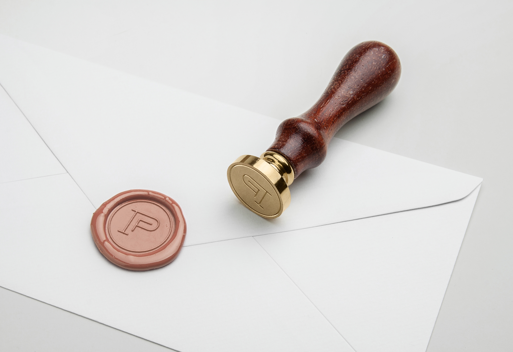
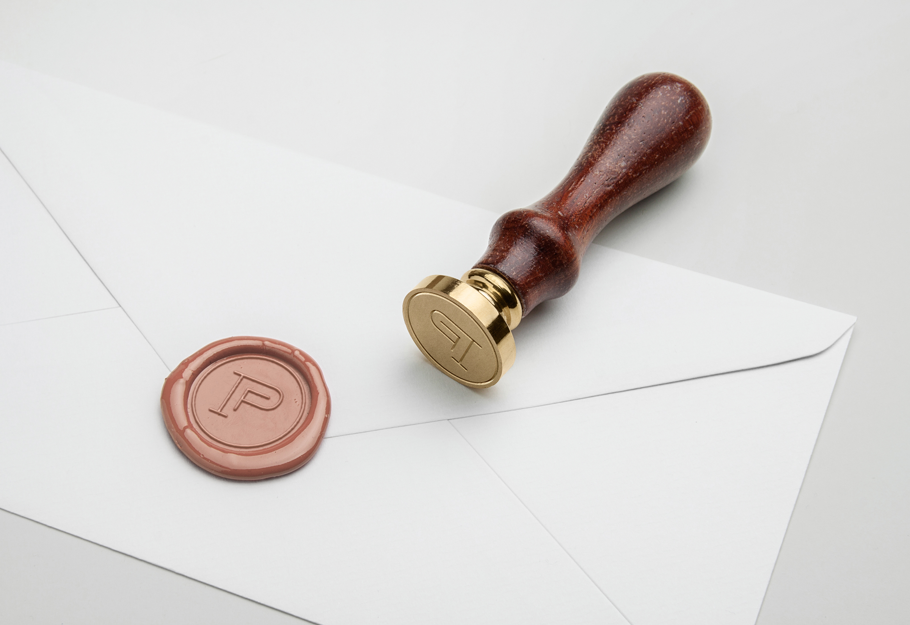

Paige Forden Logo
The owner of Paige Forden Photography (Paige Kushner) came to Worboys Design looking for a rebrand that could accurately represent her work, process, & personality. Paige takes the time to get to know each and every one of her clients in order to build strong relationships with them, and wanted a brand identity that could portray that. This focus on connection plays a big role in Paige’s work - she is able to capture real, honest moments in the lives of children and families.
I began the branding process by creating a mood board, based on some initial research as well as Paige’s overall vision for her new brand. Paige has a bold, edgy style that pairs well with her friendly and approachable demeanor. I wanted to make sure her new brand mirrored that.
Below is the finalized mood board. The soft, natural blush tones work to draw viewers in and make them feel at home while the high-contrast dark colored accents create a polished, refined, and fashionable look. Subtle sage and light grey tones soften up the overall color palette. Together, these colors create an identity that accurately portrays Paige’s passion of capturing pure, authentic moments in the lives of her clients.
Once the mood board was finalized, I proceeded to create logo design concepts that would later be presented to the client. I sat down with her to present the logo options and give her insight into the design choices behind each one.

In the end, the below concept was chosen.
 
